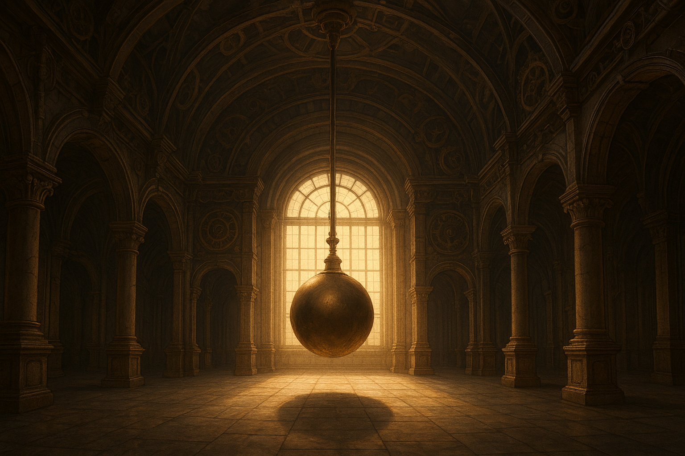

Du trittst in einen dunklen Eingang, hinter dem du schemenhaft eine Treppe erkennen kannst. Sie ist in leichten Schein gehüllt, der von Kerzen auf den Stufen ausgeht. Die Treppe selbst ist aus Stein gemacht und fühlt sich unter deinen nackten Füßen eiskalt an.
Du steigst weite und weiter, sie scheint aber einfach kein Ende zu finden. Nach einer gefühlten Ewigkeit jedoch erreichst du eine in Sonnenlicht gehüllte Galerie. Darin erblickst du ein gewaltiges Pendel, das unaufhaltsam in einem hypnotisierenden Rhythmus hin und her schwingt. Auf der West- und Ostseite der Gallerie tun sich dir nun zwei Wege auf: